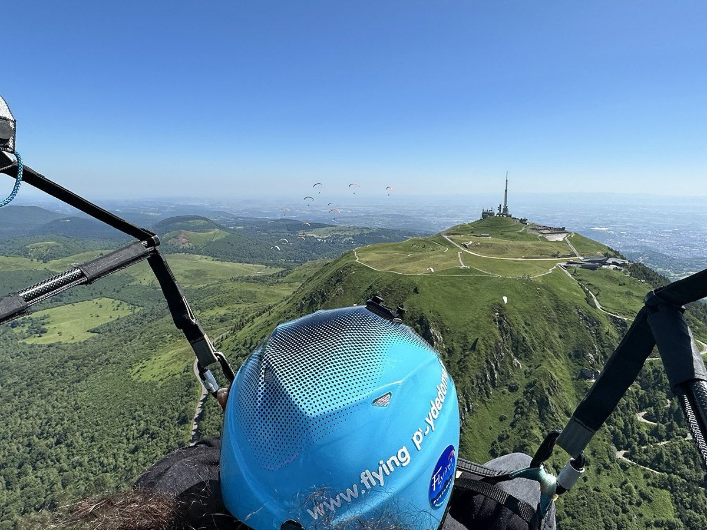
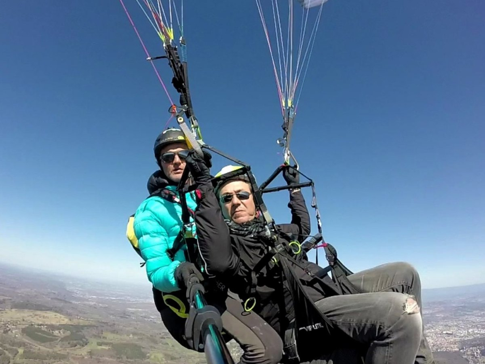
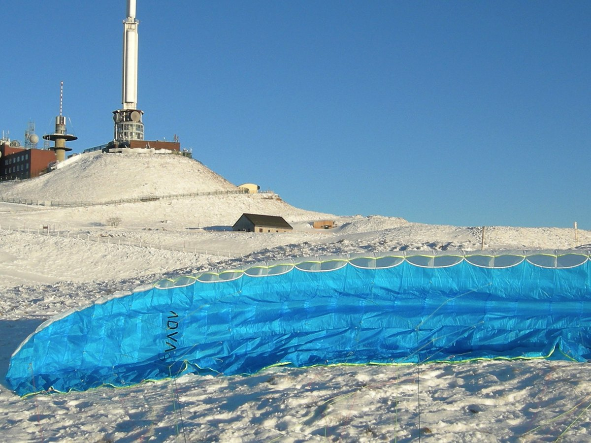

Découverte · tout public
Biplace Découverte
Votre premier vol, installé devant un moniteur diplômé d'État. Décollage depuis le Puy de Dôme, puis le silence et le panorama grandiose sur la Chaîne des Puys.
Voir les formules →Orcines · Puy-de-Dôme
Baptêmes en biplace et stages tous niveaux depuis le sommet du Puy de Dôme, en Auvergne. Encadrés par des moniteurs diplômés d'État, labellisés FFVL, pour découvrir le vol libre au-dessus des volcans de la Chaîne des Puys, en toute sécurité.
Nos expériences



Vols biplace
Tarifs 2026 · option vidéo HD du vol (30 €) · bons cadeaux valables un an · 10% de réduction pour les groupes dès 5 personnes.
100€
Le baptême idéal pour une première fois : décollage depuis le Puy de Dôme, vol tout en douceur au-dessus de la Chaîne des Puys et atterrissage en douceur.
180€
Notre offre signature : deux vols au choix (découverte et/ou performance) pour profiter pleinement du site et des conditions aérologiques du Puy de Dôme.
120€
Le vol le plus engagé : virages à grande inclinaison, 360°, recherche de thermiques et sensations fortes au-dessus du Géant d'Auvergne.
En images
Ils ont volé avec nous
Un vol biplace d'1h15 avec vidéo dans des conditions exceptionnelles. Des sensations uniques au-dessus de la Chaîne des Puys, avec la traversée des nuages ! Je le recommande vivement.
Premier baptême pour mon anniversaire, un cadeau parfait. Décollage depuis le sommet du Puy de Dôme, on se sent en sécurité du début à la fin. Merci à l'équipe !
Vol performance incroyable — les 360° au-dessus du volcan, c'est inoubliable ! Moniteur pro et rassurant. On repart avec l'envie de piloter soi-même.
Vue à 360° sur toute l'Auvergne depuis là-haut, c'est magique. Le moniteur connaît chaque courant d'air de la région. Une expérience à vivre absolument.
J'avais un peu peur avant de décoller, l'équipe m'a mise en confiance immédiatement. Au final je n'avais qu'une envie : recommencer ! Merci Flying Puy de Dôme !
Accueil chaleureux, matériel impeccable et quelle vue sur la Chaîne des Puys ! Le bon cadeau a fait un carton. Le meilleur cadeau qu'on m'ait jamais offert.
Une idée cadeau qui décolle
Anniversaire, Noël, un événement à fêter ? Offrez un vol découverte depuis le Géant d'Auvergne — bon cadeau valable un an. Émotion garantie.
Réservation & contact
Une question, une date, un cadeau à offrir ? Écrivez-nous, on vous répond vite.